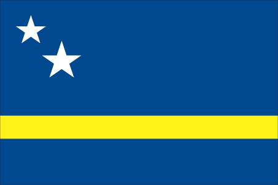

Central America and Caribbean :: CURACAO
Introduction :: CURACAO
-
Originally settled by Arawak Indians, Curacao was seized by the Dutch in 1634 along with the neighboring island of Bonaire. Once the center of the Caribbean slave trade, Curacao was hard hit economically by the abolition of slavery in 1863. Its prosperity (and that of neighboring Aruba) was restored in the early 20th century with the construction of the Isla Refineria to service the newly discovered Venezuelan oil fields. In 1954, Curacao and several other Dutch Caribbean possessions were reorganized as the Netherlands Antilles, part of the Kingdom of the Netherlands. In referenda in 2005 and 2009, the citizens of Curacao voted to become a self-governing country within the Kingdom of the Netherlands. The change in status became effective in October 2010 with the dissolution of the Netherlands Antilles.
Geography :: CURACAO
-
Caribbean, an island in the Caribbean Sea, 30 nm off the coast of Venezuela12 10 N, 69 00 WCentral America and the Caribbeantotal: 444 sq kmland: 444 sq kmwater: 0 sq kmcountry comparison to the world: 200more than twice the size of Washington, DC0 km364 kmterritorial sea: 12 nmexclusive fishing zone: 12 nmtropical marine climate, ameliorated by northeast trade winds, results in mild temperatures; semiarid with average rainfall of 60 cm/yeargenerally low, hilly terrainmean elevation: NAelevation extremes: lowest point: Caribbean Sea 0 mhighest point: Mt. Christoffel 372 mcalcium phosphates, aloes, sorghum, peanuts, vegetables, tropical fruitagricultural land: 10%arable land 10%; permanent crops 0%; permanent pasture 0%forest: 0%other: 90% (2011 est.)NAlargest concentration on the island is Willemstad; smaller settlements near the coast can be found throughout the island, particularly in the northwestCuracao is south of the Caribbean hurricane belt and is rarely threatenedNACuracao is a part of the Windward Islands (southern) group
People and Society :: CURACAO
-
149,035 (July 2016 est.)country comparison to the world: 189noun: Curacaoanadjective: Curacaoan; DutchAfro-Caribbean majority; Dutch, French, Latin American, East Asian, South Asian, Jewish minoritiesPapiamento (official) (a creole language that is a mixture of Portuguese, Spanish, Dutch, English, and, to a lesser extent, French, as well as elements of African languages and the language of the Arawak) 81.2%, Dutch (official) 8%, Spanish 4%, English (official) 2.9%, other 3.9% (2001 census)Roman Catholic 72.8%, Pentecostal 6.6%, Protestant 3.2%, Adventist 3%, Jehovah's Witness 2%, Evangelical 1.9%, other 3.8%, none 6%, unspecified 0.6% (2011 est.)0-14 years: 20.17% (male 15,327/female 14,733)15-24 years: 14.46% (male 11,239/female 10,314)25-54 years: 37.24% (male 27,132/female 28,370)55-64 years: 13.49% (male 8,706/female 11,396)65 years and over: 14.64% (male 8,993/female 12,825) (2016 est.)total dependency ratio: 51.1%youth dependency ratio: 28.7%elderly dependency ratio: 22.4%potential support ratio: 4.5% (2015 est.)total: 36 yearsmale: 33.3 yearsfemale: 39.8 years (2016 est.)country comparison to the world: 730.42% (2016 est.)country comparison to the world: 16513.8 births/1,000 population (2016 est.)country comparison to the world: 1418.3 deaths/1,000 population (2016 est.)country comparison to the world: 85-1.3 migrant(s)/1,000 population (2016 est.)country comparison to the world: 151largest concentration on the island is Willemstad; smaller settlements near the coast can be found throughout the island, particularly in the northwesturban population: 89.3% of total population (2015)rate of urbanization: 2.04% annual rate of change (2010-15 est.)WILLEMSTAD (capital) 145,000 (2014)at birth: 1.05 male(s)/female0-14 years: 1.04 male(s)/female15-24 years: 1.09 male(s)/female25-54 years: 0.96 male(s)/female55-64 years: 0.76 male(s)/female65 years and over: 0.7 male(s)/femaletotal population: 0.92 male(s)/female (2016 est.)total: 7.7 deaths/1,000 live birthsmale: 8.3 deaths/1,000 live birthsfemale: 7.1 deaths/1,000 live births (2016 est.)country comparison to the world: 156total population: 78.3 yearsmale: 76 yearsfemale: 80.7 years (2016 est.)country comparison to the world: 602.06 children born/woman (2016 est.)country comparison to the world: 109NANANAnote: active local transmission of Zika virus by Aedes species mosquitoes has been identified in this country (as of August 2016); it poses an important risk (a large number of cases possible) among US citizens if bitten by an infective mosquito; other less common ways to get Zika are through sex, via blood transfusion, or during pregnancy, in which the pregnant woman passes Zika virus to her fetus (2016)4.9% of GDP (2013)total: 18 yearsmale: 18 yearsfemale: 19 years (2013)
Government :: CURACAO
-
Dutch long form: Land CuracaoDutch short form: CuracaoPapiamentu long form: Pais KorsouPapiamentu short form: Korsouformer: Netherlands Antilles; Curacao and Dependenciesetymology: the most plausible name derivation is that the island was designated Isla de la Curacion (Spanish meaning "Island of the Cure" or "Island of Healing") or Ilha da Curacao (Portuguese meaning the same) to reflect the locale's function as a recovery stop for sick crewmenconstituent country within the Kingdom of the Netherlands; full autonomy in internal affairs granted in 2010; Dutch Government responsible for defense and foreign affairsparliamentaryname: Willemstadgeographic coordinates: 12 06 N, 68 55 Wtime difference: UTC-4 (1 hour ahead of Washington, DC, during Standard Time)none (part of the Kingdom of the Netherlands)note: Curacao is one of four constituent parts (countries) of the Kingdom of the Netherlands; the other three parts are the Netherlands, Aruba, and Sint Maartennone (part of the Kingdom of the Netherlands)King's Day, 27 April 1967previous 1947, 1955; latest adopted 5 September 2010, entered into force 10 October 2010 (regulates governance of Curacao but is subordinate to the Charter for the Kingdom of the Netherlands); note - in October 2010, with the dissolution of the Netherlands Antilles, Curacao became a constituent country within the Kingdom of the Netherlandsbased on Dutch civil law system with some English common law influencesee the Netherlands18 years of age; universalchief of state: King WILLEM-ALEXANDER of the Netherlands (since 30 April 2013); represented by Governor Lucille A. GEORGE-WOUT (since 4 November 2013)head of government: Prime Minister Bernard WHITEMAN (1 September 2015); Prime Minister Ivar ASJES resigned 31 August 2015cabinet: Cabinet appointed by the governorelections: the monarch is hereditary; governor general appointed by the monarch; following legislative elections, the leader of the majority party is usually elected prime minister by the parliamentdescription: unicameral Estates of Curacao or Staten van Curacao (21 seats; members directly elected by proportional representation vote to serve 4-year terms)elections: last held 5 October 2016 (next to be held in October 2020)election results: percent of vote by party - MAN 16.2%, MFK 16%, PAR 15.1%, KdnT 10.4%, PNP 8.8%, PS 6.7%, Un Korsou Hustu 6.1%, Movementu Progresivo 5.2%; seats by party - MAN 4, MFK 4, PAR 4, KdnT 3, PNP 2, PS 2, Un Korsou Hustu 1, Movementu Progresivo 1highest court(s): Common Court of Justice of Aruba, Curacao, Sint Maarten, Bonaire, Sint Eustatius and Saba (consists of judges from the subordinate courts)judge selection and term of office: NAsubordinate courts: first instance courts, appeals court; specialized courtsKorsou di Nos Tur or KdnT [Amparo dos SANTOS]Movementu Futuro Korsou or MFK [Gerrit SCHOTTE]Movementu Progresivo [Marylin MOSES]Movishon Antia Nobo or MAN [Hensley KOEIMAN]Partido Antia Restruktura or PAR [Zita JESUS-LEITO]Partido pa Adelanto I Inovashon Soshal or PAIS [Alex ROSARIA]Partido Nashonal di Pueblo or PNP [Humphrey DAVELAAR]Pueblo Soberano or PS [Ivar ASJES]Un Korsou Hustu [Omayra LEEFLANG]none (represented by the Kingdom of the Netherlands)chief of mission: Consul General James R. Moore (since June 2013); note - also accredited to Aruba and Sint Martinconsulate(s) general: J. B. Gorsirawegmailing address: P. O. Box 158, Willemstad, Curacaotelephone: [599] (9) 4613066FAX: [599] (9) 4616489on a blue field a horizontal yellow band somewhat below the center divides the flag into proportions of 5:1:2; two five-pointed white stars - the smaller above and to the left of the larger - appear in the canton; the blue of the upper and lower sections symbolizes the sky and sea respectively; yellow represents the sun; the stars symbolize Curacao and its uninhabited smaller sister island of Klein Curacao; the five star points signify the five continents from which Curacao's people derivelaraha (citrus tree); national colors: blue, yellow, whitename: Himmo di Korsou (Anthem of Curacao)lyrics/music: Guillermo ROSARIO, Mae HENRIQUEZ, Enrique MULLER, Betty DORAN/Frater Candidus NOWENS, Errol "El Toro" COLINAnote: adapted 1978; the lyrics, originally written in 1899, were rewritten in 1978 to make them less colonial in nature
Economy :: CURACAO
-
Most of Curacao’s GDP results from services. Tourism, petroleum refining and bunkering, offshore finance, and transportation and communications are the mainstays of this small island economy, which is closely tied to the outside world. Curacao has limited natural resources, poor soil, and inadequate water supplies, and budgetary problems complicate reform of the health and education systems. Although GDP grew only slightly during the past decade, Curacao enjoys a high per capita income and a well-developed infrastructure compared with other countries in the region.Curacao has an excellent natural harbor that can accommodate large oil tankers, and the port of Willemstad hosts a free trade zone and a dry dock. Venezuelan state oil company PdVSA, under a contract in effect until 2019, leases the single refinery on the island from the government, directly employing some 1,000 people; most of the oil for the refinery is imported from Venezuela; most of the refined products are exported to the US and Asia. Almost all consumer and capital goods are imported, with the US, the Netherlands and Venezuela being the major suppliers.The government is attempting to diversify its industry and trade and has signed an Association Agreement with the EU to expand business there. In 2013, the government implemented changes to the sales tax and reformed the public pension and health care systems, including increasing the sales tax from 5% to as high as 9% on some products, raising the age for public pension withdrawals to 65, and requiring citizens to pay higher premiums.$3.128 billion (2012 est.)$3.02 billion (2011 est.)$2.96 billion (2010 est.)note: data are in 2012 US dollarscountry comparison to the world: 185$5.6 billion (2012 est.)3.6% (2012 est.)2% (2011 est.)0.1% (2010 est.)country comparison to the world: 80$15,000 (2004 est.)country comparison to the world: 107agriculture: 0.7%industry: 15.5%services: 83.8% (2012 est.)aloe, sorghum, peanuts, vegetables, tropical fruittourism, petroleum refining, petroleum transshipment, light manufacturing, financial and business servicesNA%73,010 (2013)country comparison to the world: 184agriculture: 1.2%industry: 16.9%services: 81.8% (2008 est.)13% (2013 est.)9.8% (2011 est.)country comparison to the world: 14316.6% of GDP (2012 est.)country comparison to the world: 185-0.4% of GDP (2012 est.)country comparison to the world: 5033.2% of GDP (2012 est.)40.6% of GDP (2011 est.)country comparison to the world: 1352.6% (2013 est.)2.8% (2012 est.)country comparison to the world: 135$1.607 billion (2011 est.)$1.44 billion (2010 est.)country comparison to the world: 144petroleum products$1.285 billion (2011 est.)$1.275 billion (2010 est.)country comparison to the world: 175crude petroleum, food, manufacturesNetherlands Antillean guilders (ANG) per US dollar -1.79 (2014)1.79 (2013)1.79 (2012 est.)1.79 (2011 est.)
Energy :: CURACAO
-
population without electricity: 14,903electrification - total population: 91%electrification - urban areas: 91%electrification - rural areas: 80% (2012)1.785 billion kWh (2012 est.)country comparison to the world: 142968 million kWh (2008 est.)country comparison to the world: 1520 kWh (2009 est.)country comparison to the world: 1160 kWh (2009 est.)country comparison to the world: 1270 bbl (1 January 2011 es)country comparison to the world: 115531.1 bbl/day (2010 est.)country comparison to the world: 11072,000 bbl/day (2010 est.)country comparison to the world: 88211,100 bbl/day (2009 est.)country comparison to the world: 33291,700 bbl/day (2009 est.)country comparison to the world: 250 cu m (2009 est.)country comparison to the world: 1670 cu m (2009 est.)country comparison to the world: 1260 cu m (2009 est.)country comparison to the world: 740 cu m (2009 est.)country comparison to the world: 1730 cu m (1 January 2011 es)country comparison to the world: 121
Communications :: CURACAO
-
international: country code - 599government-run Telecuracao operates a TV station and a radio station; several privately owned radio stations.cwtotal: 138,750percent of population: 93.9% (July 2014 est.)
Transportation :: CURACAO
-
number of registered air carriers: 2inventory of registered aircraft operated by air carriers: 11 (2015)PJ (2016)total: 550 kmcountry comparison to the world: 193major seaport(s): Willemstadoil terminal(s): Bullen Baai (Curacao Terminal)bulk cargo port(s): Fuik Bay (phosphate rock)
Military and Security :: CURACAO
-
no regular military forces; the Dutch Government controls foreign and defense policy (2012)no conscription (2010)defense is the responsibility of the Kingdom of the Netherlands